Go Home
Site Map
Go Home
Site Map
Suspension Parts
Why Moog?
First off... The only bushings I use are Moog OEM type replacements whenever possible. They are always top quality and often include certain updates over OE. They aren't the only source of OEM type bushings.
MOOG web site
That said, anyone that hasn't seen the Moog bushings for Fiero should. Moog has formed the rear LCA bushing with a different mold with more rubber on the ends to tighten brake reaction. There is now a front and a rear bushing in the set instead of two identical ones like GM used.
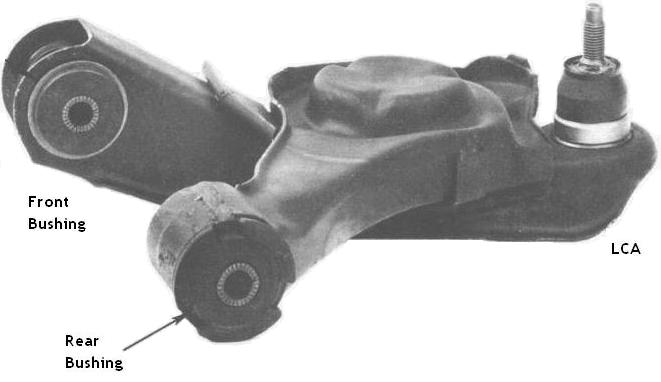
This view of the Front LCA is from the instruction sheet that comes with the bushings. I don't think that is actually a Fiero LCA. It definitely isn't the same as I have on my 87.
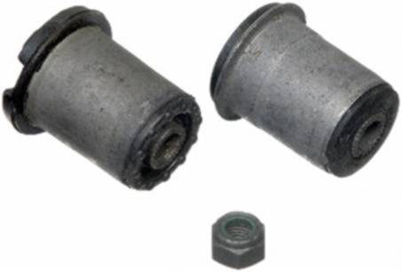
This view of the Front LCA set is from the Moog catalog so you can see the other end better.
Moog parts, 84-87 Fiero
I pulled all the Moog catalog images for 84-87 Fiero into this table so you wouldn't have to dig all over. You can get Moog parts thru many auto parts stores. Expect that you will probably have to order at least some of them so plan accordingly.
This most expensive item is the rear Ball Joint and yes that's largely because it is only made for Fiero. Everything else fits multiple vehicles.
| Location | Ball Joint | Bushings |
|---|---|---|
| Front UCA | 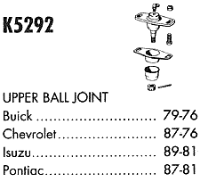 | 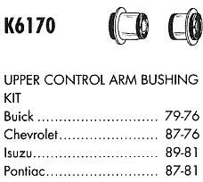 |
| 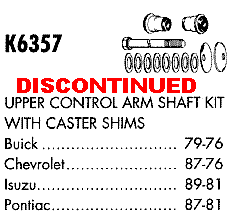 | ||
| Front LCA | 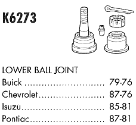 | 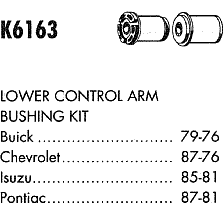 |
| Rear CA | 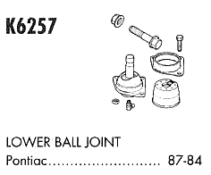 | 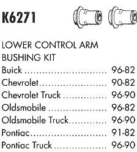 |
| Rear Strut | K5322 Strut Mount | K90462 Strut Bellow |
| Rod Ends | Outer | Inner |
| Front | ES2232RL | EV121 |
| Rear | ES2500RL | |
| Sway Bar, Front | 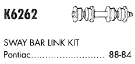 | 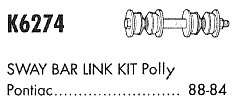 |
| 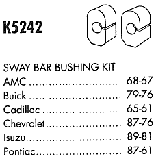
For Front bar 13/16 or smaller |
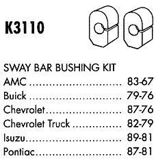
For Front bar 7/8 or Larger |
|
88 Suspension Parts
Here's a note about rubber bushings for 88 from Zoom88 in the forums. I haven't checked this but I figured it was worth storing where folks could find it.
As theogre mentions you cannot find rubber control arms through
Moog for the 88 Fiero.
However you can still get some from the dealer. If you go to the dealer and ask
for upper and lower control arm bushing for a 1988 Pontiac Fiero you will be
told they have been discontinued for the lower control arm.
Doing alot of research I have found an OEM rubber bushing for the lower control
arm that is an EXACT fit.
At some point in time GM changed their part numbers, they may have made a
mistake on the listing. Who knows?
I do know that most places you go on the net and enter the part
number 470722 it will tell you it can't find it.
But here is the info from my order.
I purchased mine from Jim Fresard parts and service out of Royal Oak Michigan 11/23/03. Sales person was Bob Roybal. I ordered by phone 1-248-547-6100
Here are the Part numbers for the rubber bushings I used to replace on both the upper and lower control arms.
Part number for front lower is 470722, cost for 4 - $48.32
Part number for front upper is 462980, cost for 4 - $ 47.24
shipping was - $ 8.95
You can also get some other parts thru Rodney Dickman and Fiero store.
According to Spark1 in the forums...
There is a cross reference of OEM bushing numbers to Moog.
The GM number for the 88 lower control arm bushing posted previously (470722) crosses to Moog BR179.
CSK (Checker-Shucks-Kragen) lists the McQuay-Norris FB371.
Autopartsgiant.com lists the ACDelco 45G9048 which ACDelco says fits the Chevette.
NAPA crosses the GM number to their 2673352. The the same NAPA number pops up for McQuay-Norris FB371 and ACDelco 45G9048 but not for Moog BR179.
None of the other numbers cross to anything at the ACDelco site.
Take your pick, some or all may work.
I haven't checked into any of that but it should give 88 owners something to look into.